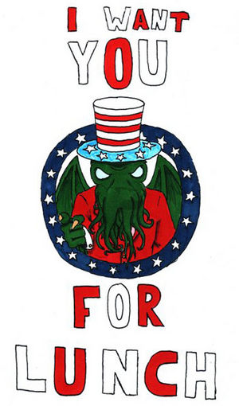

Universos paralelos
 De: La Frikipedia, la enciclopedia extremadamente seria.
De: La Frikipedia, la enciclopedia extremadamente seria.
Según un principio de lógica en un enunciado de 2 contradicciones hacia una verdad hay 2 tipos: una verdadera y una falsa, pero luego otro tío que no tenía mejor cosa que hacer dijo: y si lo falso es verdadero y lo verdadero falso?, y ahi nos jodio la vaina porque hay que ir a los universos paralelos.
Una rama muy mentirosa de la metafísica (en si la metafísica puede ser mentira), en la que dice que el tiempo y el espacio si siguen un patrón determinado por el destino, y si consideramos que no existe un único tiempo y espacio, entonces nos toparemos con los universos paralelos.
¿Qué es un universo paralelo ?
 Dios de el universo paralelo sepia
Lugar que co-existe en el espacio y en el tiempo con nuestro Universo pero sin llegar a tocarse, por que eso es de nenazas. El ejemplo de Universo Paralelo más conocido y al alcance de la mano es el que se ve al mirar un espejo, en el que todo esta invertido. Si te apetece crearte uno mirate esto.
Aunque si aún tienes dudas observemos el siguiente ejemplo:
Nuestro mundo normal
Bush es presidente, Jessica Biel está buena, los emos son mierda, tú no tienes novia, la wii es mejor que la Play Station 3, el Mandril tiene 9 copas de la champion, el Barça solo 2, Brasil es el mejor país en fútbol y Guatemala no ha clasificado jamás a un mundial.
En un universo paralelo
Bush es el enviado de Dios, Jessica Biel es tú novia, los emos son mejor que la Play Station 3, la wii es una mierda, el Barça tiene 9 copas de la champion, el Mandril solo 2, Guatemala es el mejor país en fútbol y Brasil no ha clasificado jamás en el mundial .
¿Que podemos sacar de esto?
¿Lo ven?, ¡es una locura!, pero a la vez es un sueño que todos queremos muy en el fondo cumplir.
Un universo paralelo surge cuando en algún punto decisivo de la historia no puede predecirse nada y existe una bifurcación en la que una verdad (que a futuro será verdad) puede ser o no falsa dependiendo del resultado de ese evento en específico.
Viéndolo desde una causa y efecto, y viendo también Héroes (¡sí!, la serie del japonés friki que para el tiempo y el enfermero emo que salva al mundo), vemos que el mundo puede estar relacionado y que lo que hacemos afecta de forma indirecta a los demás.
Características de los universos paralelos
- Por norma, un Universo Paralelo estará habitado por nuestros propios gemelos malignos. La maldad de dichos "alter egos" aumenta en función de el orden en que se visiten dichos universos.
- Un Universo Paralelo estará contenido en una estúpida y anodina caja de cartón, único punto de encuentro de todos y cada uno de estos Universos. Si la caja se rompiese, ambos universos se fusionarían dando lugar a un "Condensado de de Bose-Einstein".
- La Tetrix es igual en todos los
universidades Universos existentes y gobierna sobre todos con equidad (es decir, con un caballo) y Terabytes de pr0n, aunque su favorito es el Universo Paralelo habitado por nuestros gemelos usando todo el día la PC.
- Si consiguieramos matar a todos nuestros gemelos existentes , nos convertiriamos en súper-hombres, como se puede apreciar en la película "El Único"
- Hay infinito más uno Universos Paralelos, y todos son variaciones del que conocemos.
- La Frikipedia es invariable en todos los Universos, pues a la Tetrix le gusta así.
Peligros de viajar entre Universos
Hay diversos peligros que pueden existir por viajar entre Universos Paralelos, muchos no tienen importancia mas que para tí y para tu puta madre. Como unos tienen peligros para mí y yo no quiero eso, como otros tienen peligros para tí y yo quiero eso y como otros tienen peligros para mi suegra y yo si quiero eso (mas que te pase algo a tí) los clasificaremos en clasificaciones.
Peligros para tí
Al viajar por de este universo a otro, te pueden pasar estas cosas:
- Puedes lastimarte seriamente al golpearte contra un espejo intentando llegar con tu otro yo
- Viajar con éxito al otro Universo (verso único) pero unos años antes y veas a tu madre teniendo sexo con tu padre.
Curiosidades de los universos paralelos
Mire Anexo:Curiosidades de los universos paralelos
Universos paralelos conocidos

Uno de los seres que han conseguido dominar el mundo aunque fuera en una dimensión espacio-temporal alternativa
- Universo paralelo brillante: en este universo todos tienen un bronceado fino (eshpañolizar), las temperaturas varian de 1x10^20 ºC a 1500x10^50 ºC..., algunos lo llaman "sol"... se le llama el universo brillante porque todo debe brillar como un espejo para que la gente no se hierva dentro de las casas. Se cree que el universo paralelo brillante es un universo futuro que no le presto atencion al calentamiento global, ni a Jesús y por ende estan asi.
- Universo paralelo gris: en este universo siempre es de noche, los habitantes, son engendros que viven encerrados, jugando calabozos y dragones hasta el fin de los tiempos ( vease: nerd ), en este universo no existen las mujeres, y se le conoce como luna. se le atribulle a que hubo una masacre nuclear y por ende los unicos protegidos fueron los que como homero simpson protegieron su casa con pintura de plomo para evitar la radiacion. por desgracia , el solo comer gusanitos de gomitas , mayonesa y tacos de gasolinera y la poca exposición al sol hizo que la gente mutara a estos engendros. Este universo es posible que ya se haya extinguido ya que como se sabe si llegas a mas de 40 si tirar mueres por sobrerecoleccion de esperma.
- Universo paralelo de namecusei : en este universo existe un sujeto llamado Son Goku que es el papa de los helados en el pero como es gilipollas no lo sabe , por eso es humilde . este universo es muy inestable ya que siempre aparece un gamberra alien que quiere destruir a los humanos pero llega Goku y los mata igualito , lo que importa es que en la pelea las ciudades quedan vueltas nada y a los 2 capitulos ( unidad de medición de tiempo ) la gente es feliz en su nueva ciudad , luego viene otro alien y se repite la historia . se sabe que en este universo las mujeres tienen nombre de puta rusa ( Bulva , Milk , Pan ) y los hombres de japones con zulu o algo asi ... tenemos la teoria que son nombres sacados de articulos de supermercado ( goku o cacaraotas , gohan o arroz en japones , vegeta o galleta ,mr satan y mr popo , piccolo o pequeño , frezzer o congelador , cooler o culero , trunx de patineta, goten o optenido en ingles ,zelt o celda, krilin me esta ,etc) la gente tiene los ojos mas grandes porque las peleas son tan brutales que casi no parpadean , el chocolate esta hecho de personas menos el que hace mr popo . se cree tambien que antes de ellos existia otra raza menos querida llamada caballeros del zodiaco y que dejaron de ser tan indios porque vino mazinger z y les dio frikipedia.
- Universo del tercer impacto : este universo esta extinto , pero se sabe que en un principio fue de raiz igual a la del namecusei pero en vez de que mazinger z les diera frikipedia se bajo de el una putita llamada rei ayanami y se mezclo con todos los hombres que quedaban en el apocaliptico planeta , haciendose los nuevos ricos la gente dejo de preocuparse por los aliens y crecieron felices hasta que vino un alien y los volvio mierda otra vez . como no existia goku en este universo la gente creyo que era su fin y se resignaron a su final , pero por suerte una replica de mazinger z que funcionaba con enchufe los salvo de los alienigenas ... de ahi se crearon los evas . se sabe que en este universo las mujeres sobrepoblaron el planeta , todo el mundo es traumado de mierda que no es emo porque no tiene plata pero igual son perdedores , las mujeres estan locas y son promiscuas y ninfomanas pero los hombres son todos unos gilipollas , lentos , nerds , maricones y cuasi emos porque pueden besarlos , tocarlos y insinuarseles de frente y no tienen ni una ereccion o hacen vomitar a sus contrapartes femeninas , un ejemplo de el macho comun de este planeta se llama shinji ikari , un perdedor que tiene el jueguete mas caro del mundo y lo unico que hace es llorar y matar a sus amigos .
- "El universo que contiene nuestro universo": muchos
charlatanes cientificos disen que nuestro universo esta contenido dentro de una caja presente en nuestro universo, esta caja creada por el profesor Hubert J. Farnsworth contiene nuestro universo,si entras en esta caja saldras en este universo, si esta caja es destruida nuestro universo sera destruido, en fin es un enigma, por eso el portador de esta caja deve apresiarla y atesorarla para el bien de si mismo.
- Universo no universo : es el universo que no es pero a la vez si es ... sabemos todo al respecto pero a la vez lo desconocemos por completo . sospechamos que se parece a la creencia que hillary duff todavia es virgen o que gabo no es gay.
- Universo de GTA : es el universo mas raro que hay , siempre miras es a tu espalda no en primera persona, puedes tener 10 mil armas en el bolsillo sin que se te note y ir por la calle con cualquiera de ellas sin que la policia te pare . las mujeres son putas y los hombres gritan cuando cortan los arboles porque les molesta el sonido de una motosierra . puedes tener tambien millones de dolares en tu bolsillo y correr como lleva el viento sin que te importe nada . la gente conduce como tarados mentales y obtienes casas matando mafiosos. por ensestar un chicle en una papelera te suena una musiquita pegajosa que dependiendo de la ciudad parecera un rap o un tecno de los 80 . toda la gente se odia y las mujeres quieren que las huelas porque siempre huelen a sexo , inclusive las ancianitas .
- Universo del maestro zen : es el universo en que solo vive el maestro zen , se sabe que se ve todo como una pelicula antigua porque existen gases estupefacientes que aclaresen el cabello y alargan la barba , las cosas se destruyen con estornudos y los martines pescadores atacan sin previo avizo , el dinero crece en el vello pubico del maestro zen pero solo hay una tienda de mal chino traducido y de tallarines ramen , por ende la unica diversion sana y hipoalergenica es ver una fuente magica donde idiotas ingleses se halan las pelotas por un poco de dinero.
- Universo de la cabeza de marilin manson: este universo es el mas retorcido que hay , las mujeres tambien son putas pero son siamesas y usan croches de cruero de ballena como lenceria , la gente acostumbra caminar en sancos mientras hace ejercicios de yoga , la mansion playboy esta llena de mujeres con cabeza de conejo , los microfonos tienen forma de pene , alf es satan , los graficos son como doom 1 y por eso la gente se cae a tiros en los colegios ,la gente se saluda normalmente con una puñeta o un escupitajo en el ojo ,jesucristo muere en una cruz de televisores y la gente es hombre o mujer o ambas ... es comun tambien que la gente se saque un ojo y se ponga uno de vidrio .
cabe destacar que nadie viola aqui a sus hijos ... se puede violar hasta al perro pero nunca a un hijo . sino pues te meten en un pozo donde la pintura se corroe y te corroe a ti tambien . o sino te abren en 2 y te comen las tripas y se beben tu sangre.
Conclusión
No te jodas tu puta vida pensando que no hice esto o no hiciste lo otro, si la mujer que amas no te paro nunca, no importa se feliz con el sentimiento que en otro universo te la estas tirando, o también puedes pensar que en otro universo es lesbiana o hermafrodita dada la circunstancia.
Si estas muerto de la ira porque tu hermanito destrozo tu Ipod con un bate por que no quería recojer la pelota que tiro al jardín del vecino, ¡no te calientes! en otro universo tu estas rompiendole la cabeza o en dado caso puede que el este siendo devorado por el perro asesino come hombres chihuahueño del vecino.
Y por ultimo, si no te gusta tu puta vida: ¡¡Mátate emo de mierda!!, en otro universo tienes vida y no eres tan perdedor como para deprimirte todos los días porque tienes la polla corta (en otro universo la tienes enorme). No te contentes con lo que eres ahora sino en lo que en otro universo no eres o quisieras ser.
Autor(es):
- Krusher
- Roms
- Asorma
- Azulejos
- El Sevillano
- Alex el Mono
- Pedrosky
- Taichaos
- NRikee
- DragóN
Frikipedia 2005-2016, Licencia
GFDL 1.2 - Extraído por FrikiLeaks